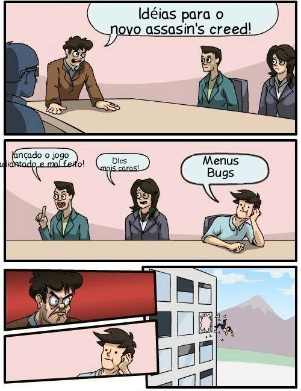
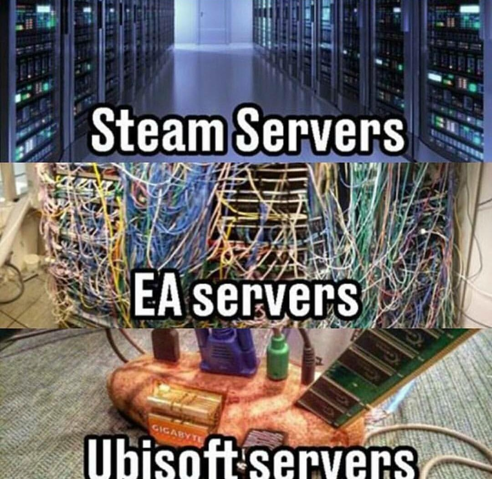

Porque não jogar jogos da Ubisoft
Se você CONSEGUIR jogar no caso
Obs: Os jogos tem uma proposta incrível, a falha é na própria execução.
Muitos dos jogos lançados pela ubisoft caem facilmente no 'hype' dos jogadores, por suas gameplay e história
serem vendidas nos trailers como algo totalmente diferenciado, mas quando o jogo é lançado é quase impossível
ver a real diferença deles, pois o jogo já chega inundado de bugs, que a cada atualização vão aumentando mais,
além de que o launcher da ubisoft, "Ubisoft Connect" raramente abre sem dar algum problema, tendo o usuário que
relogar várias vezes para conseguir jogar.
Bugsoft é um apelido que cai muito bem, a propósito.
Motivos para odiar
- Falta de decicação ao usuário
- Número absurdo de lançamentos por ano
- Descontinuação de atualização de jogos
- 0% de êxito em bugs fix
- Servidor fora pelo menos 3 vezes por dia
- Test server dos jogos totalmente inútil, pois não ouvem a opinião dos usuários
- Alto número de cancelamento de jogos


O número de cancelamento é sem exagero, realmente alto, devido ao número de anúncios de jogos por
ano, surpreende que não seja maior.
Jogos em ordem alfabética
- Aliens Versus Predator for Game Boy Advance[3]
- America's Army: Rise of a Soldier for PlayStation 2
- Animalz Marine Zoo for Nintendo DS
- Arcatera for Dreamcast
- Assassin's Creed: Lost Legacy for Nintendo 3DS[4]
- Assassin's Creed Utopia for Android, iOS[5]
- Babyz Party for Wii
- Bonx for Game Boy Advance
- Bratz: Formal Funk for PlayStation 2
- Brothers in Arms: Furious 4 for Windows, PlayStation 4, Xbox One[6]
- Call of Juarez for Xbox
- Campus for PlayStation 2, Xbox[7]
- Charlie's Angels for Game Boy Advance, Xbox
- Cloudberry Kingdom for PlayStation Vita
- Crouching Tiger, Hidden Dragon for GameCube
- Dance on Broadway for Nintendo DS
- Dragon Riders for Game Boy Color
- E.T.: Return to the Green Planet for PlayStation 2
- Far Cry Instincts for PlayStation 2
- F1 Racing Championship 2 for Windows, PlayStation 2
- Funky Barn for PlayStation 3
- Gold and Glory: The Road to El Dorado for Dreamcast
- Guitar Hits for PlayStation Portable
- Haze for Windows, Xbox 360
- Heroes for PlayStation 3, Xbox 360[8]
- Imagine: Animal Doctor for Windows
- Killer Freaks from Outer Space for Wii U
- Killing Day for PlayStation 3, Xbox 360[9]
- Larry Bond's Harpoon 4 for Windows[10]
- Might & Magic Raiders for Browser
- My Life Coach for Nintendo DS
- Petz: Monkeyz House for Windows
- Project Q for Windows, PlayStation 4, PlayStation 5, Xbox One, Xbox Series X/S[11]
- Steep for Nintendo Switch[12]
- TMNT for PlayStation 3
- Tom Clancy's Ghost Recon 2 for Windows[13]
- Tom Clancy's Ghost Recon Advanced Warfighter for GameCube
- Tom Clancy's Ghost Recon Advanced Warfighter 2 for Wii
- Tom Clancy's Ghost Recon Commander for Browser[14]
- Tom Clancy's Ghost Recon: Frontline for multiple platforms
- Tom Clancy's Ghost Recon: Future Soldier for Nintendo DS, PlayStation Portable
- Tom Clancy's Ghost Recon: Island Thunder for PlayStation 2
- Tom Clancy's Ghost Recon Phantoms for Wii U
- Tom Clancy's Rainbow 6: Patriots for Windows, PlayStation 3, PlayStation 4, Xbox 360, Xbox One[15]
- Tom Clancy's Rainbow Six: Critical Hour for PlayStation 2
- Tom Clancy's Rainbow Six: Rogue Spear for PlayStation 2
- Tom Clancy's Rainbow Six: Vegas for GameCube, PlayStation 2, Xbox
- Tom Clancy's Splinter Cell for Meta Quest 2
- V.I.P. for Dreamcast
- Wildwaters for Nintendo 64
- ZombiU 2 for Wii U
51 jogos, 51 JOGOS!
Seções:
Motivos para odiar
Jogos cancelados
Site wikipedia com a descrição dos jogos cancelados:
List of Ubisoft Games